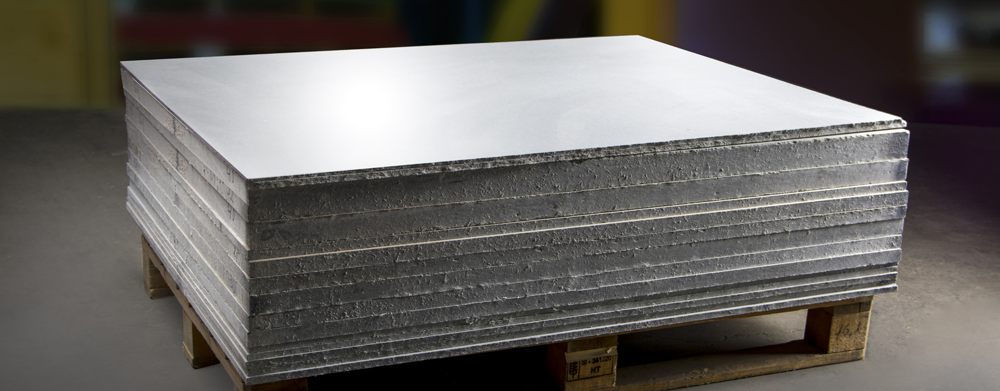

Высокотемпературные материалы ФОРТЕРМ
Для предприятий, экспортирующих свою продукцию за рубеж или производящих оборудование для ОАО «РЖД», судостроения — предлагаются безопасные для здоровья материалы, не содержащих асбеста, керамических волокон, фенола, галогенов и являющихся при этом негорючими материалами, взамен традиционных асбестосодержащих или керамических материалов.
Для предприятий, экспортирующих свою продукцию за рубеж или производящих оборудование для ОАО «РЖД», судостроения — предлагаются безопасные для здоровья материалы, не содержащих асбеста, керамических волокон, фенола, галогенов и являющихся при этом негорючими материалами, взамен традиционных асбестосодержащих или керамических материалов.
Для предприятий, экспортирующих свою продукцию за рубеж или производящих оборудование для ОАО «РЖД», судостроения — предлагаются безопасные для здоровья материалы, не содержащих асбеста, керамических волокон, фенола, галогенов и являющихся при этом негорючими материалами, взамен традиционных асбестосодержащих или керамических материалов.
ФОРТЕРМ CS
 Стандартные плиты из силиката кальция ФОРТЕРМ CS рассчитаны на рабочую температуру до 850 °С, выдерживают контакт с расплавленным металлом. Так же материал может усовершенствоваться для получения повышенной механической и термической прочности и более низкой усадки, или может армироваться углеродным волокном.
Стандартные плиты из силиката кальция ФОРТЕРМ CS рассчитаны на рабочую температуру до 850 °С, выдерживают контакт с расплавленным металлом. Так же материал может усовершенствоваться для получения повышенной механической и термической прочности и более низкой усадки, или может армироваться углеродным волокном.
Материалы ФОРТЕРМ CS – это техническая керамика, изготавливаемая из силиката кальция. Эта техническая керамика, не содержащая асбестового волокна, является термоизолирующим, несмачиваемым, трещиностойким материалом с малой усадкой. ФОРТЕРМ CS – стандартный продукт, применяемый при литье алюминия, а также в промышленных печах и других отраслях промышленности.
Технические характеристики материала
| NN | Параметр | Значение |
|---|---|---|
| 1 | Состав материала | техническая керамика из силиката кальция, не содержащая асбестового волокна |
| 2 | Формат поставки | в плитах |
| 3 | Температура применения | минимальная: -800 °C максимальная: 1100 °C |
| 4 | Класс электрической изоляции | C (св.250°С) |
| 5 | Плотность, г/куб.см | 0.5 |
| 6 | Цвет | светло-желтый |
ФОРТЕРМ M
ФОРТЕРМ М – высокожаропрочный, электро- и термоизоляционный материал, изготовленный на основе стекломассы и слюды, разработанный для применения в оборудовании железнодорожного транспорта, электротехнической, металлургической и других отраслях промышленности.
Материал ФОРТЕРМ М производится разных марок, отличающихся между собой по составу и свойствам, и представляет собой листы с нешлифованной поверхностью.
Материалы ФОРТЕРМ М являются абсолютно безвредными для здоровья, не содержат свинцовых соединений, асбеста, фенола и в связи с этим представляют собой надежный заменитель материалов в тех областях, где по термическим и электрическим характеристикам ранее использовались асбестосодержащие материалы.
ФОРТЕРМ М состоит из мусковит-слюды, связанной со стеклом без содержания свинца. Имеет цвета металлик золотистый/серый.
Технические характеристики материала
| NN | Параметр | Значение |
|---|---|---|
| 1 | Состав материала | состоит из мусковит-слюды, связанной со стеклом без содержания свинца |
| 2 | Формат поставки | в листах |
| 3 | Температура применения | минимальная: -20 °C максимальная: 500 °C |
| 4 | Класс электрической изоляции | C (св.250°С) |
| 5 | Плотность, г/куб.см | 2.65 |
| 6 | Цвет | металлик золотистый/серый |
ФОРТЕРМ Р
плиты цементные высокотемпературные дугостойкие электроизоляционные торговой марки «ФОРТЕРМ», не содержат асбеста и используются в качестве заменителя асбестоцементных досок, изготавливаемых по ГОСТ 4248-92, или аналогичных материалов в оборудовании железнодорожного транспорта, электротехнической промышленности, металлургии.
В зависимости от применяемых материалов, пропиток и эксплуатационных характеристик, плиты изготавливаются следующих марок и составов: «Н91» (портландцемент, Волластонит, глина, кварцевый песок, слюда, добавки); «Н96» (аналогично «Н91», но с покрытием высокотемпературной термореактивной смолой или органосиликатной композицией с глубиной пропитки не менее 3 мм); «Р» (высокоглиноземистый цемент, белая глина, стекловолокно, усиленный стеклосеткой).
Технические характеристики материала
| NN | Параметр | Значение |
|---|---|---|
| 1 | Состав материала | высокоглиноземистый цемент, белая глина, стекловолокно, усиленный стеклосеткой |
| 2 | Формат поставки | в листах |
| 3 | Температура применения | минимальная: -100 °C максимальная: 500 °C |
| 4 | Класс электрической изоляции | C (св.250°С) |
| 5 | Плотность, г/куб.см | 2.0 |
| 6 | Цвет | от серого до белого |
ФОРТЕРМ Н96
плиты цементные высокотемпературные дугостойкие электроизоляционные торговой марки «ФОРТЕРМ», не содержат асбеста и используются в качестве заменителя асбестоцементных досок, изготавливаемых по ГОСТ 4248-92, или аналогичных материалов в оборудовании железнодорожного транспорта, электротехнической промышленности, металлургии.
Технические характеристики материала
| NN | Параметр | Значение |
|---|---|---|
| 1 | Состав материала | портландцемент, волластонит, глина, кварцевый песок, слюда, добавки, с покрытием высокотемпературной термореактивной смолой или органосиликатной композицией с глубиной пропитки не менее 3 мм |
| 2 | Формат поставки | в листах |
| 3 | Температура применения | минимальная: -100 °C максимальная: 500 °C |
| 4 | Класс электрической изоляции | C (св.250°С) |
| 5 | Плотность, г/куб.см | 1.8 |
| 6 | Цвет | от серого до белого |
ФОРТЕРМ Н91
плиты цементные высокотемпературные дугостойкие электроизоляционные торговой марки «ФОРТЕРМ», не содержат асбеста и используются в качестве заменителя асбестоцементных досок, изготавливаемых по ГОСТ 4248-92, или аналогичных материалов в оборудовании железнодорожного транспорта, электротехнической промышленности, металлургии.
Технические характеристики материала
| NN | Параметр | Значение |
|---|---|---|
| 1 | Состав материала | портландцемент, волластонит, глина, кварцевый песок, слюда, добавки |
| 2 | Формат поставки | в листах |
| 3 | Температура применения | минимальная: -100 °C максимальная: 500 °C |
| 4 | Класс электрической изоляции | C (св.250°С) |
| 5 | Плотность, г/куб.см | 1.8 |
| 6 | Цвет | от серого до белого |